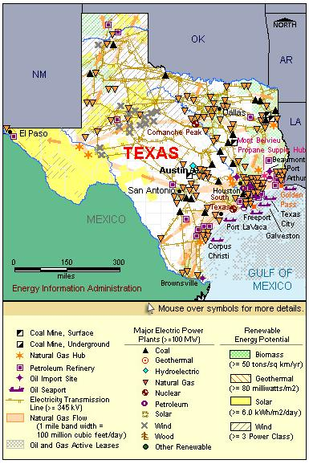

State Overview
There are two operating nuclear power plants in Texas:
Comanche Peak in Somervell County
- Comanche Peak, formerly owned and operated by Texas Utilities (TXU), was acquired by Luminant in 2004.
- Luminant has followed up on TXU's plan to file a Combined License (COL) for two additional reactors at this site. More information on this COL is available in Status of Potential New Commercial Reactors in the United States.
South Texas in Matagorda County
- Texas anticipates significant growth in electricity demand, and both of the Lone Star State's nuclear plants are planning to add reactors.
- The twin reactors at the South Texas Project (STP) site were the largest reactors ever constructed in the United States (although since then, uprates at Palo Verde Units 1 and 2 have increased capacities beyond those of the STP units).
Contribution of Nuclear Power
Texas is one of the 10 largest states in terms of nuclear capacity, accounting for almost 5% of the national total.
Nuclear power makes up less than 5% of Texas’s total electric capacity, but produces almost 10% of the State’s electricity, third behind natural gas and coal.
Texas exports roughly 2% of its electricity production.
License Renewals
- Comanche Peak: The original operating license for Comanche Peak unit 1 expires February 2030. The operating license for unit 2 expires February 2033.
- South Texas: On June 18, 2008, the STP Nuclear Operating Company notified the NRC that it plans to submit a license renewal application for both South Texas units. The original operating license for South Texas unit 1 expires August 2027; unit 2 expires August 2028.
New Applications
- Comanche Peak: On September 19, 2008, a Combined License application was submitted for two new, Advance Pressurized Water Reactors (APWR) at the Comanche Peak plant.
- South Texas: On September 20, 2007, a Combined License application was submitted for two new, Advanced Boiling Water Reactors (ABWR) at the South Texas plant.
- Victoria County: A Combined License application was submitted for a new, two reactor plant in Victoria County on September 3, 2008; however, that application has since been put on hold.

|
| Texas Total Electric Power Industry, Summer Capacity and Net Generation, by Energy Source, 2008 |
| Primary Energy Source |
Summer Capacity
(MW) |
Share of State Total
(Percent) |
Net Generation
(Thousand MWh) |
Share of State Total
(Percent) |
| Nuclear |
4,927 |
4.7 |
40,727 |
10.1 |
| Coal |
20,189 |
19.2 |
147,132 |
36.3 |
| Hydro and Pumped Storage |
673 |
0.6 |
1,039 |
0.3 |
| Natural Gas |
70,856 |
67.5 |
193,247 |
47.7 |
| Other1 |
396 |
0.4 |
3,969 |
1.0 |
| Other Renewable1 |
7,708 |
7.3 |
17,639 |
4.4 |
| Petroleum |
218 |
0.2 |
1,034 |
0.3 |
| Total |
104,966 |
100.0 |
404,788 |
100.0 |
| Texas Nuclear Power Plants, Summer Capacity and Net Generation, 2008 |
| Plant Name/Total Reactors |
Summer Capacity
(MW) |
Net Generation
(Thousand MWh) |
Share of State Nuclear
Net Generation
(Percent) |
Owner |
Comanche Peak
Unit 1, Unit 2 |
2,367 |
19,235 |
47.2 |
TXU Generation Co LP |
South Texas Project
Unit 1, Unit 2 |
2,560 |
21,493 |
52.8 |
STP Nuclear Operating Co |
2 Plants
4 Reactors |
4,927 |
40,727 |
100.0 |
|
Plant Profiles
Comanche Peak Nuclear Power Plant
| Comanche Peak |
| Unit |
Summer Capacity
(MW) |
Net Generation
(Thousand MWh) |
Summer Capacity Factor
(Percent) |
Type |
Commercial Operation Date |
License Expiration Date |
| 1 |
1,209 |
9,659 |
91.2 |
PWR |
8/13/1990 |
2/8/2030 |
| 2 |
1,158 |
9,576 |
94.4 |
PWR |
8/3/1993 |
2/2/2033 |
| |
2,367 |
19,235 |
92.8 |
|
|
|
Operator: Luminant
Location and Service Territory: The Comanche Peak power plant is located in Somervell County.
Reactor Descriptions: Both units are Westinghouse four-loop pressurized water reactors.
Cooling System: Comanche Peak uses a once-through cooling system that draws water from the Squaw Creek Reservoir.
South Texas Project
| South Texas Project |
| Unit |
Summer Capacity
(MW) |
Net Generation
(Thousand MWh) |
Summer Capacity Factor
(Percent) |
Type |
Commercial Operation Date |
License Expiration Date |
| 1 |
1,280 |
10,767 |
96.0 |
PWR |
8/25/1988 |
8/20/2027 |
| 2 |
1,280 |
10,726 |
95.7 |
PWR |
6/19/1989 |
12/15/2028 |
| |
2,560 |
21,493 |
95.8 |
|
|
|
Operator: STP Nuclear Operating Company.
Location and Service Territory: The South Texas Project (STP) is located in Matagorda County between Bay City and Palacios.
Staffing: There are 1,300 full-time personnel, including contractors.
Reactor Descriptions: Both South Texas reactors are Westinghouse four-loop pressurized water reactors holding 193 fuel assemblies.
Cooling System: STP is cooled by water from its own 7,000 acre reservoir.
see also:
more annual nuclear statistics
projected electricity capacity to 2035
international
electricity statistics |
|